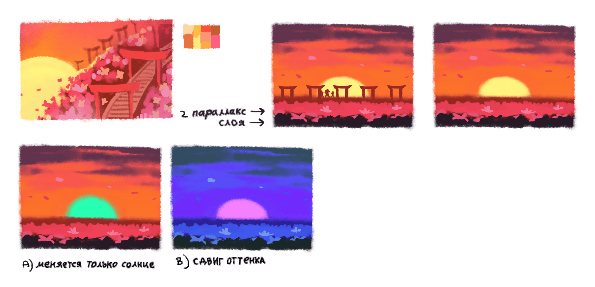
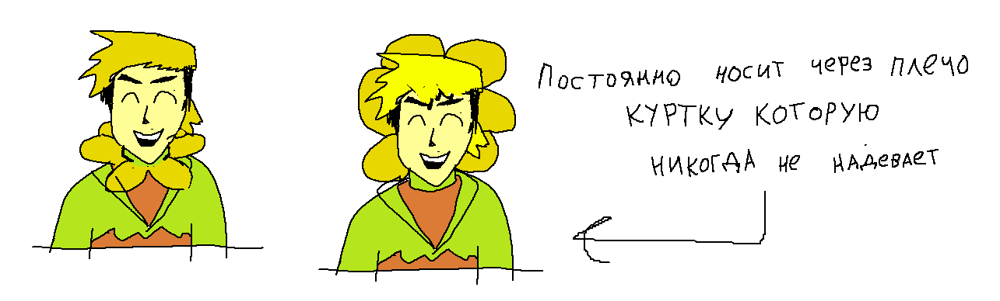
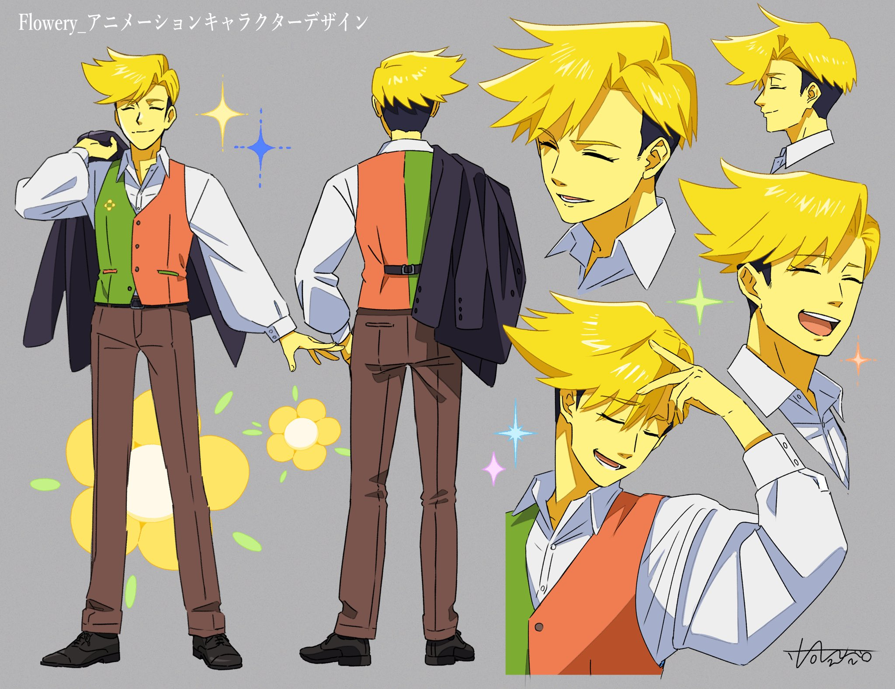
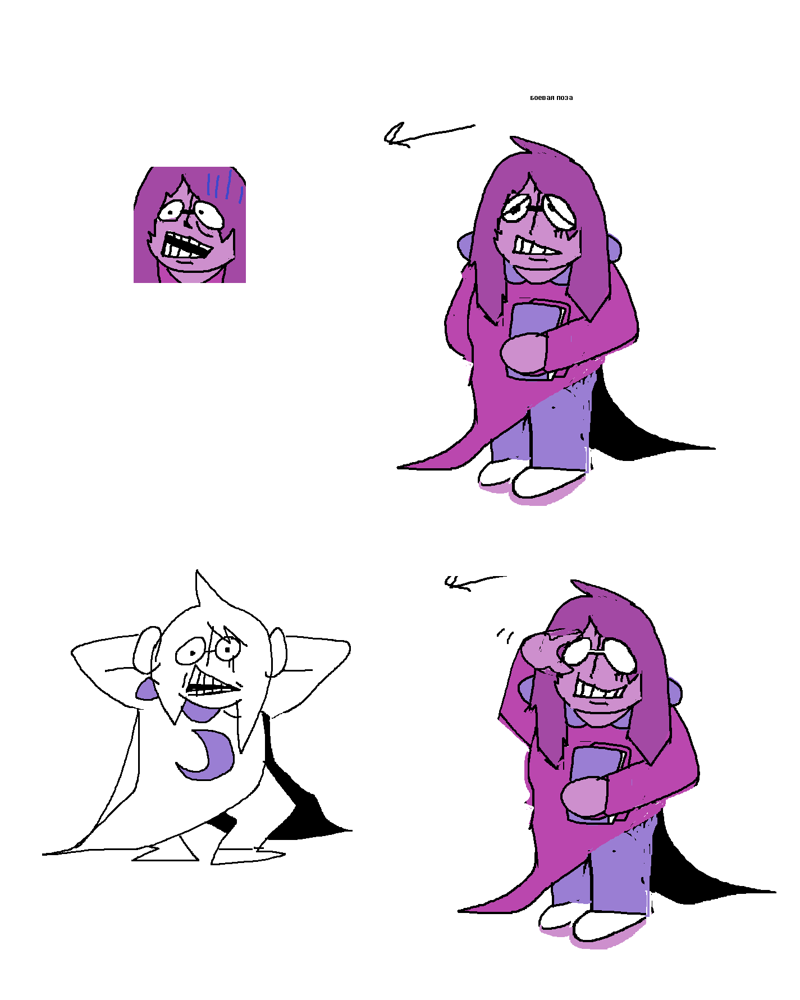
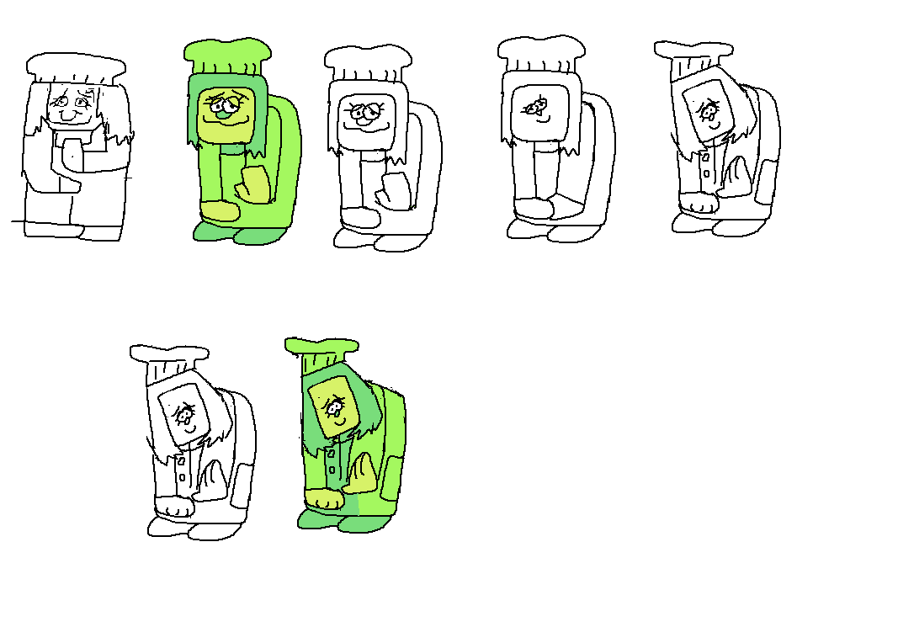
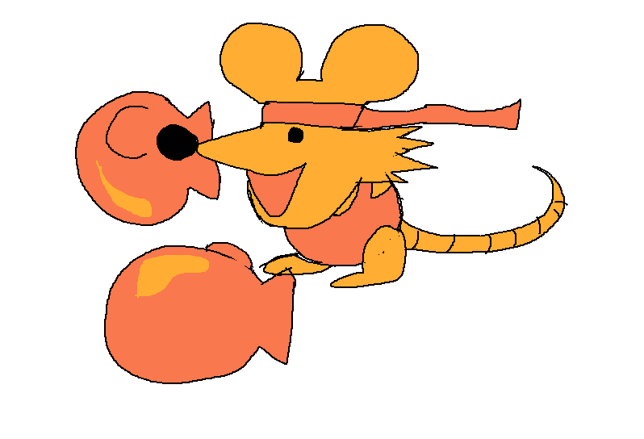
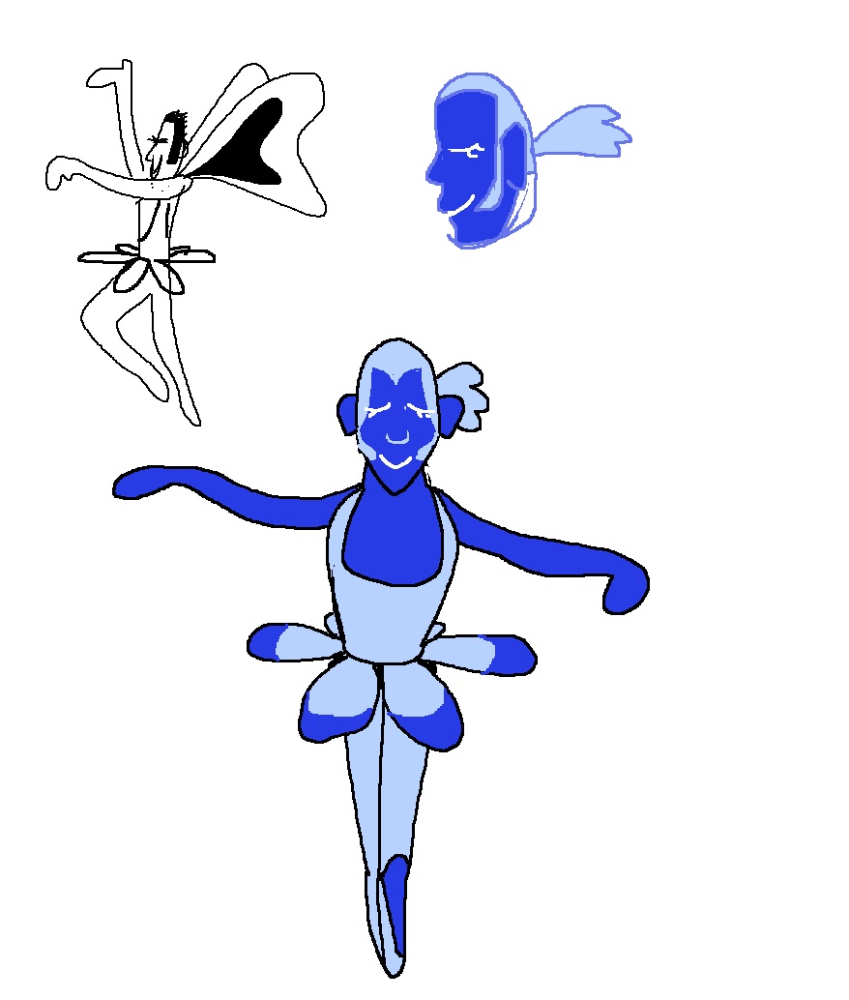

РАЗМЫШЛЕНИЯ О 5 ГЛАВЕ
{kind=link}

Давайте поговорим о 5 главе...
CONCEPT AND GAMEPLAY
До релиза, я описывал пятую главу как "весëлую". Надеюсь все понимают, что я имел в виду. (Что она весëлая.) Больше глав, фокусирующихся на глупых, жаждущих внимания Тëмных, которые могут выиграть странные конкурсы по популярности, не будет. Но, держа в голове структуру истории, это было идеальное место, чтобы сделать такого ещё разок.
Несмотря на то, что с первой главы прошло всего четыре главы, я хотел, чтобы пятая глава была ностальгической смесью веселья и неожиданных идей. Музыка из первой главы. Персонажи, отсылающиеся на АНДЕРТЕЙЛ... и так далее.
Из новых элементов мы добавили платформинг, где можно прыгать, бегать и ДЕЙСТВОВАТЬ. Разработка началась в октябре 2021. Периодически программировал Ondydev, создатель таких проектов, как Tres-bashers. Впоследствии, ближе к концу разработки четвёртой главы, другие члены команды смогли работать с его прототипами.
Ранняя демонстрация платформера от Ondy с его собственными врагами.
Как всегда, у нас вышло огромное количество прототипов. Были некоторые сложности в дизайне платформинг-секций. Я считаю это достойным нововведением в главе, но у нас было то, что мы должны были держать в голове...
Мы создали прототипы врагов для каждого цветка, но не все они были использованы.
- Дельтарун - РПГ с фокусом на взаимодействии персонажей. Если игра полностью превращается в экшен-платформер, игрок может начать задаваться вопросом «А какого $#& я играю в недоделанный Hollow Knight?» вместо того, чтобы просто наслаждаться игрой.
- Чтобы добавить уникальные геймплейные элементы персонажей, система платформинговых ДЕЙСТВИЙ была разработана в октябре 2024. Изначально планировалось большое количество ДЕЙСТВИЙ для каждого персонажа, но в конечном итоге мы решили, что наиболее интуитивно будет оставить нависание Ральзея и Ярый Взмах Сьюзи.
- Дельтарун не был бы Дельтаруном, если бы мы не добавили кучу опциональных диалогов за те или иные действия во время платформинг-секций, а так же некоторые бои в РПГ стиле во время этих секций. Это позволило не сильно смещать основной фокус игры.
- Ещё одна вещь, о которой необходимо было помнить, это то, что платформинг-секции могли быть чьим-то знакомством с жанром. (Мысль пугает, но технически это возможно.) В игре до этого не было ничего похожего, так что мы сделали все прыжки довольно лёгкими. Но нам было очень весело разрабатывать более сложные отрезки, поэтому они есть в качестве опционального контента. Надеюсь, они вам понравились.
Мы пытались сделать секции, где нужно было бы использовать оба стиля геймплея... Но они получились слишком громоздкими и непонятными.
Ещё одной трудностью было представить 8 уникальных персонажей в одной главе, не сбивая при этом темп повествования. Отложив в сторону то, насколько это хорошая идея... Мне кажется, у меня вышло раскрыть уникальные черты каждого цветка без угнетения истории. У каждого из моих друзей был свой любимый цветок, и каждый цветок был чьим-то любимым, и это всё, что мне было нужно.

ПЕРСОНАЖИ - ЦВЕТЫ
{kind=link}

10 лет назад, все ошибались в имени «Flowey» И писали его как «Flowery». Меня это невероятно бесило. И я подумал: «было бы забавно, если бы был ещё один золотой цветок „Flowery“, чтобы его имя могли писать как „Flowey“».
Золотистый цветок — «Золотой» — смог стать «Мери Сью» В форме «Флавери». Он пытается быть «идеальным»... Но не имеет ни малейшего понятия о том, как жить. Его интерпретация «идеального человека» совершенно чуждая и экстравагантная. Он выглядит как типичный аниме-парень и ростом сильно выше обычного человека. Очень вероятно, что он сам выбрал свою тему и каким-то образом сам её и играет... Тем временем его тема это просто плохо написанная версия 8 секунд из заглавной темы Full H**se. И ему она кажется очень крутой.
Взгляните на другие цветы с той же точки зрения. Их дизайн может показаться странным, но это потому, что они сами выбирали, какими хотят быть. Интересно, что же вдохновило их «мечты»?.. (Это не сильно важно, но об этом интересно думать.)
Надеюсь, никому это не покажется чем-то новым. Я просто говорю о том, что уже есть в игре.
Держите концепт-арт от Тоуко Ятабе из Студии Кара для анимации! (Её ранний концепт арт для анимации определил финальный костюм Флавери!)
{kind=link}

В разных ситуациях у него разный дизайн. Мне нравится, когда у персонажей такой нестабильный дизайн. Особенно для такого персонажа, как он. Может быть, эта нестабильность - его вина.
ДРУГИЕ ЦВЕТЫ
Вот концепт-арты других цветов.

АКВА – у меня не было никаких проблем изобразить еë. Она очевидно вдохновлена Touhou. Один раз, я разговаривал с одним человеком, и они не знали, что такое Touhou, и тогда я сказал: «Bad Apple!?» и они сказали «А я думал что это что-то вроде Хацунэ Мику... » ... Песню поёт даже не Хацунэ Мику...
{kind=link}

СЕТ – персонаж Сет вдохновлëн Сетом из Illusion of Gaia. Оба персонажа фиолетовые и носят очки... Но на этом сходства заканчиваются. По изначальному концепту сет должна была быть с белыми волосами и кожей, которая была чуть более лавандового тона, но когда я показал друзьям, они сказали: «Это... Ну... Уже есть во Вселенной Стивена...» Так что я изменил дизайн.
{kind=link}

ЗЕЛËНАЯ – её дизайн вдохновлëн стилем моей подруги splendidland, которая сделала Хакера, Касперсона и других прикольных ребят. Она даже не знала о Зелёной до её выхода.
{kind=link}

ОРАНЖЕВАЯ – очень сложно изобразить её счастье на таком маленьком спрайте. Просто посмотрите на неё. Было просто обязательно сделать одного персонажа мышью, чтобы было максимально очевидно, насколько искажено представление цветов о людях.
{kind=link}
{kind=link}
ЖЁЛТЫЙ – у него было два дизайна. В более раннем от октября 2016 он был более крутым, спокойным и рассудительным парнем с бородой. Потом я перерисовал его ближе к Январю 2020. Он частично вдохновлён Вуди из Истории Игрушек. Он немного предсказывался в третьей главе ванными шторами. Это единственный раз, когда я делал осознанное предсказание ковбоя в своей жизни.
{kind=link}

СИНИЙ – в игре на его диалоговом спрайте другая причëска. Мне показалось забавным показать несколько вариаций того, как он может выглядеть.
ДИЗАЙНЫ ДРУГИХ ПЕРСОНАЖЕЙ!?
В этой главе было два приглашённых художника, работавших над дизайнами врагов.
NELNAL – Nelnal сделал целых 4 дизайна врагов для этой главы. Жукоби, Теракота, горшочный лучник и танцор-богомол. По итогу лишь двое были использованы... По крайней мере в пятой главе.
{kind=link}
{kind=link}
{kind=link}
HITOSHI ARIGA – Хитоши Арига – это японский художник, наиболее известный по работе над мангой Rockman Megamix и дизайнами некоторых покемонов, вроде недавних любимчиков Sneasler, Flutter Mane и Ogerpon. Но вы знали, что он так же работал над такими играми, как Illusion of Gaia?!
Он нарисовал лисичку, которую я доработал и добавил в игру.

Отходя от темы, он сам и его семья просто замечательные и добрые люди!!!
ПРИГЛАШЁННЫЕ МУЗЫКАНТЫ!?
В этот раз многие помогли и с музыкой.
Garden of Hopes and Dreams – Carlos Eiene - сложно поверить, что он выпустил свой первый джазовый альбом по Андертейлу, когда был ребëнком. Я очень рад представить его в игре!
Rakuichi Buster – rakuichi – изначально я использовал его музыку в трейлере для Дельтаруна... Но поскольку мы делали "пафосную" Версию Field of Hopes and Dreams, нам нужна "пафосная" Версия Rude Buster.
Cutie Mew Mew Magic – Camellia – для этой песни я написал демо длинной в пару десятков секунд и отправил вместе с парой минут моей игры на пианино с пением. Я так же выслал текстовое описание каждой части. Camellia сделал всю работу после этого. Лол. Изначальная чиптюн версия была всего 6 секунд плюс мелодия, но я добавил ещё немного, чтобы её стоило послушать, спасибо.
Flower Man – Camellia – я много раз пытался создать этот трек самостоятельно, и даже пытался сотрудничать с другими музыкантами ради живого исполнения с вокалом... Но ничего не получалось с семплами, которые я использовал, поэтому я молил Camellia об аранжировке. Вот самая ранняя версия на пианино.
I Think I’m In Love / DELTARUNE Logo – itoki hana – я сделал аутлайн песни, она сделала аранжировку, я скомпоновал всё со своими инструментами. Само лого было вдохновлено Сейлор Мун.
ПРИГЛАШЁННЫЙ ХУДОЖНИК!?
Создательница Fields of Mistria, Клэр, нарисовала спрайты Розовой! Она отличный друг и поддерживала меня закончить Андертейл, так что я был очень рад поработать с ней!

Спасибо!